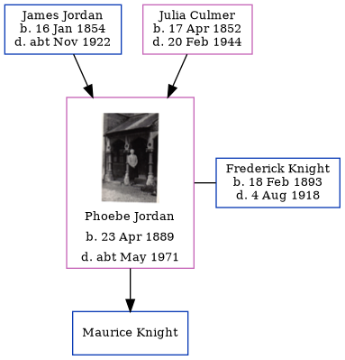

Phoebe May Knight (née Jordan) 1889 - c1971
[ Home ] | [ Calendar ] | [ Surnames Index ] | [ Errors ] | [ Family History ]The child of James Jordan (a horse keeper) and Julia Culmer, Phoebe Jordan, the second cousin twice-removed on the mother's side of Nigel Horne, was born in Faversham, Kent, England on 23 Apr 18891,2, was baptised there on 24 May 1889 and also married Frederick Knight (with whom she had 1 child, Maurice) there c. Aug 19174.
During her life, she was living at 2 Mill Place in Faversham on 5 Apr 18915 - less than a mile from her sister Alice Ann Harriet who was living at 2 Mill Place in Faversham, on 31 Mar 19016, on 29 Sept 19391 (when she was living with her) following the death of her husband on 4 Aug 1918 and on 20 Feb 1944 (the same place as her father had been living on 2 Apr 1911).
She died c. May 1971 in Canterbury, Kent, England3.
Parents
- James was born on 16 Jan 1854
- Julia was born on 17 Apr 1852
Citations
- 1939 Register - Findmypast (was the head of the household)
- England & Wales births 1837-2006 - Findmypast
- England & Wales deaths 1837-2007 - Findmypast
- England & Wales Marriages 1837-2005 - Findmypast
- 1891 England, Wales & Scotland Census - Findmypast (was age 2 and the daughter of the head of the household)
- 1901 England, Wales & Scotland Census - Findmypast (was age 11 and the daughter of the head of the household)
Media
Phoebe May Jordan

1939 Register Transcription - TNA-R39-1715-1715J-013-20
England & Wales births 1837-2006 - BMD/B/1889/2/AZ/000327/009
1891 England, Wales & Scotland Census - GBC/1891/0005793052
England & Wales marriages 1837-2005 - BMD/M/1917/3/AZ/000580/139
England & Wales deaths 1837-2007 - BMD/D/1971/2/AZ/000668/078
1901 England, Wales & Scotland Census - GBC/1901/0006632160
Family Tree
Map
Generated by ged2site. Last updated on Jul 3, 2024
Known Issues
Residence record for 20 Feb 1944 contains no citation